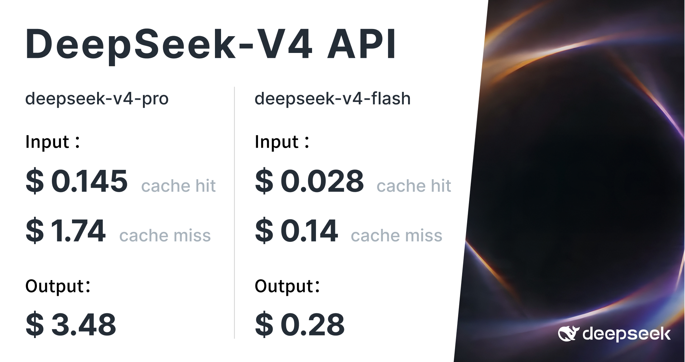

一、导语
2026 年 8 月 13 日，DeepSeek 宣布 DeepSeek-V4-Pro 正式版在 APP、网页端和 API 同步上线，API 调用方式不变，模型名 deepseek-v4-pro 即指向最新版本。与 Preview 相比，正式版把火力集中在 Agent 能力上：Terminal Bench 2.1 得分 87.9，HLE（带工具）60.0，原生支持 OpenAI Responses API 格式并一键适配 Codex，同时新增 low / high / max 三档思考强度。API 定价也迎来结构性调整——峰谷定价，闲时价格仅为高峰时段的一半。
更值得玩味的是时间窗口：就在前一天（8 月 12 日），xAI 刚刚发布主打长时运行智能体的 Grok 4.6；同一天，DeepSeek-V4-Pro 也登陆硅基流动开放 1M 上下文。头部模型厂商的 Agent 军备竞赛，正在以「天」为单位推进。
二、背景分析：为什么这个正式版重要？
DeepSeek V4 系列的节奏值得复盘。V4-Pro 与 V4-Flash 的 API 早在 2026 年 4 月 24 日 就已开放，当时使用的模型名还是 preview 语义；7 月 31 日，V4-Flash 正式版率先公测，Terminal Bench 2.1 拿到 82.7；直到 8 月 13 日，V4-Pro 才正式收尾。整个 V4 系列从预览到正式，跨度接近四个月——期间 OpenAI、Anthropic、Google 的 Agent 类模型密集换代，DeepSeek 用「Flash 先上、Pro 后补」的节奏把 Agent 能力一点点补齐，这次正式版几乎是对 Preview 的全面重做。
更重要的是行业背景：Ars Technica 本周的报道标题直接点破——OpenAI 和 Anthropic 正在打价格战，而中国对手步步紧逼。DeepSeek 正是这场价格战里最锋利的变量：它同时拥有开源权重、顶尖基准和极低定价三张牌。
三、核心内容：正式版的三板斧
1. Agent 基准全面拉升，生产环境是主战场
官方更新日志用一句话定性：「正式版 DeepSeek V4 Pro 极大增强了 Agent 能力，在生产环境中的性能表现提升尤为显著。」
「正式版 DeepSeek V4 Pro 极大增强了 Agent 能力，在生产环境中的性能表现提升尤为显著。」
具体基准如下：HLE（不带工具 / 带工具）42.7 / 60.0，Terminal Bench 2.1 87.9，NL2Repo 61.5，Cybergym 83.3，DeepSWE 62.7，Toolathlon-Verified 74.1，Agents' Last Exam 25.7，AutomationBench（公开）31.8，DSBench-FullStack 71.1，DSBench-Hard 67.2。Terminal Bench 与 Cybergym 双双超过 80 分，意味着模型在真实终端操作、网络安全这类「动手」场景里的执行可靠性，已经进入可用区间。

2. 原生 Responses API + 一键适配 Codex：抢开发者工作流入口
DeepSeek API 现已原生支持 OpenAI Responses API 格式，并针对性适配 Codex——用户通过官方提供的一键配置脚本，即可把 Codex 指向 DeepSeek 后端。这一手与 Google 的 Gemini 3.7 Flash（同样主打编程与智能体）思路一致：模型能力之外，开发者工具链的「换芯成本」才是护城河。
3. 三档思考强度 + 峰谷定价：成本结构的精细化
V4-Pro 与 V4-Flash 的思考模式现支持 low / high / max 三档强度：简单任务用 low，日常 Agent 任务用 high，复杂场景开 max。配合 8 月 17 日 0 时生效的峰谷定价（闲时价格为高峰时段一半），DeepSeek 实质上把「思考深度」和「调用时段」都变成了可调的成本旋钮——这对大批量跑 Agent 的开发者是实打实的成本结构变化。
四、各方反应
生态侧：8 月 12 日，DeepSeek-V4-Pro 登陆硅基流动（SiliconFlow），支持 1M 上下文，国产推理服务商第一时间跟进。
竞争侧：发布窗口几乎被同行填满——xAI 的 Grok 4.6（8 月 12 日，强化长时运行智能体）、Google DeepMind 的 Gemini 3.7 Flash（编程与智能体工作模型）、通义千问 Qwen3.8 系列开源、智谱 GLM-5.3（编程能力开源第一）接连登场。有行业评论称，DeepSeek V4 Pro 与 Grok 4.6 同日前后发布，「双双逼近 Claude Fable 5 的体验」。
「OpenAI 与 Anthropic 正在打价格战，而中国 AI 对手正在快速逼近——DeepSeek 的定价策略让闭源厂商的每一轮涨价都如履薄冰。」
开发者侧：Reddit 与国内技术社区讨论集中在两处——一是 Responses API 兼容让现有 OpenAI 生态代码几乎零成本迁移；二是峰谷定价对夜间批量任务的吸引力，有开发者调侃「把 Agent 挪到后半夜跑，成本直接砍半」。
五、深度解读：这意味着什么？
Agent 竞争从「基准表演」进入「生产环境」
HLE 带工具 60.0 与 Terminal Bench 87.9 的组合说明一件事：模型厂商已经不再满足于「聊天榜单」上的数字，而是比拼在真实终端、真实代码仓库、真实漏洞环境里的执行成功率。Agent 不再是被展示的 demo，而是被按次计费的生产力工具——这解释了为什么 DeepSeek 要同步推出思考强度分档与峰谷定价：用量上去了，成本结构必须跟上。
峰谷定价是把价格战打到了「调度经济学」
过去的价格战比的是每百万 token 单价，DeepSeek 的峰谷定价则把算力时段变成了商品：闲时半价本质上是把 GPU 空转成本转嫁给价格敏感型用户，既提高算力利用率，又用价格锚点继续挤压对手。对 Claude、GPT 等闭源高价模型而言，这种「弹性定价」的压迫感比单纯降价更难受。
对工具站读者的实用建议
如果你在用 Codex 或兼容 OpenAI 格式的 Agent 框架：可以直接按官方文档把 base_url 切到 DeepSeek 试试，1M 上下文 + Responses API 对长会话型 Agent 尤其友好；批量任务尽量排到闲时时段，成本立减一半；简单问答用 low 思考档即可，把 high/max 留给真正复杂的推理与工具调用场景。
六、总结
DeepSeek-V4-Pro 正式版用「生产级 Agent 基准 + 原生 Responses API + 峰谷定价」三张牌，把中国大模型的价格战从「每百万 token 单价」推向了「算力时段调度」的新维度——当对手还在比拼参数与榜单时，DeepSeek 已经开始拼成本结构的精细度了。